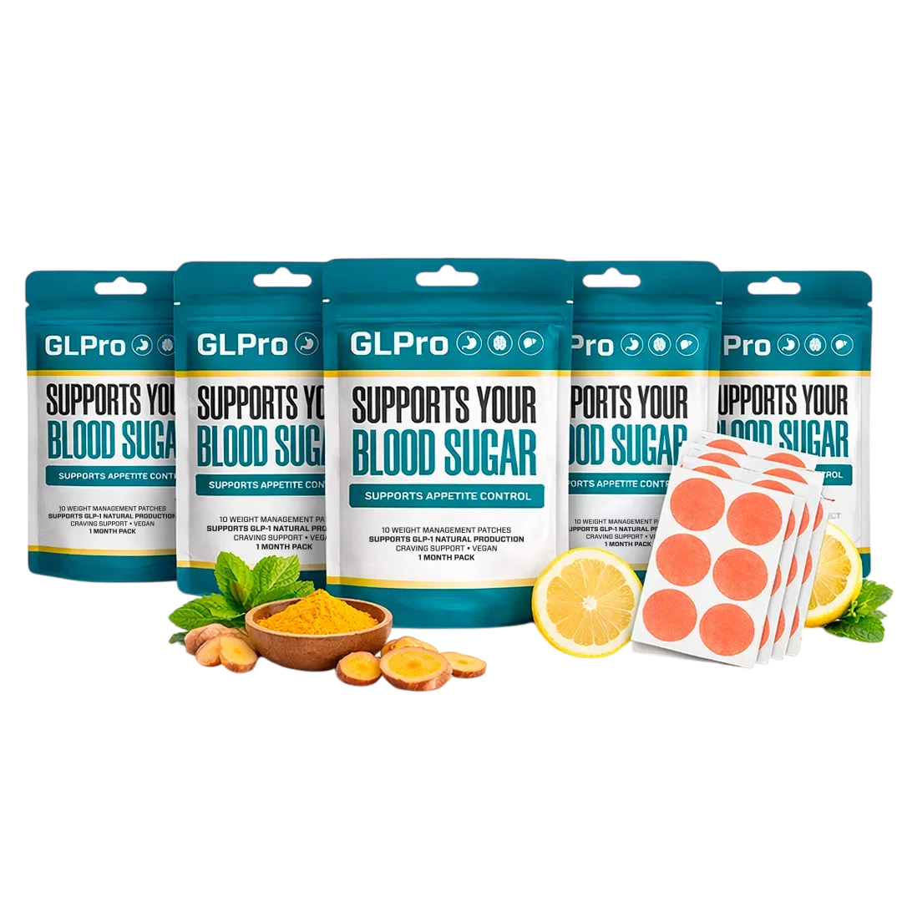
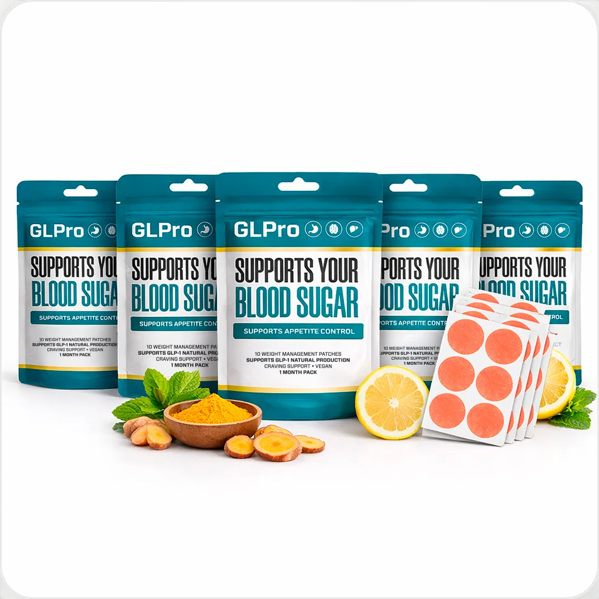

Starter
2 Packages60 days
$79per package
$316 $158 total + shipping
- 2 packages, 60 days
- 60-day money-back guarantee
GLPro · Transdermal GLP-1 Patch
GLPatch is a transdermal patch worn on the skin instead of a pill or injection. Each pack holds patches for a one-month routine. Apply one patch daily to a clean, dry area of skin, replace it the next day, and that's the whole routine. Every order is backed by a 60-day money-back guarantee.
| Form | Transdermal patch |
|---|---|
| Supply | 1 pouch = 1 month |
| Use | 1 patch daily, replace each day |
| Guarantee | 60 days, money-back |
Secured checkout

Why Choose GLPatch
Every pouch is a one-month supply, backed by a 60-day money-back guarantee.

What Is GLPatch
GLPro GLPatch is a transdermal patch that delivers a blend of GLP-1-supporting botanicals directly through the skin — positioned to support blood sugar balance, appetite control and natural weight management, without pills or injections. The pouch reads "Supports Your Blood Sugar," "Supports Appetite Control," "Supports GLP-1 Natural Production," "Craving Support," and "Vegan."
Each pouch is a one-month pack. Instead of swallowing a capsule or measuring a liquid, you apply one patch to clean, dry skin and replace it daily — a routine built around a habit you already have, like getting dressed in the morning.
Pricing
The longer your supply, the lower your per-package price — every order is backed by a 60-day money-back guarantee.
Starter
$79per package
$316 $158 total + shipping
Best Value — Most Popular
$49per package
$474 $294 total · Free US shipping
Standard
$69per package
$474 $207 total + shipping
Each package is a one-month supply. Prices reflect the official order page as of this writing and may change — the checkout always shows the live, final total.

60-Day Money-Back Guarantee
Every GLPatch package is backed by an iron-clad 60-day guarantee. Apply it daily, give it time, and experience the difference. If you're not completely satisfied for any reason, contact support — every penny refunded, no questions asked.
Every order is packed with care and shipped quickly. 6-package orders qualify for free US shipping.
How GLPatch Works
Apply one patch to a clean, dry area — arm, shoulder, or abdomen.*
Active botanicals are absorbed directly through the skin, bypassing digestion.*
Remove and replace with a fresh patch every day for continuous support.*
Many users report reduced cravings and steadier energy within the first 1-2 weeks. For the full benefits, a 90-180 day routine is recommended.
See what makes GLPatch's delivery system different.
The Formula
Every patch is engineered with a clean, plant-based complex and delivered through advanced transdermal technology.
An advanced nano-delivery matrix that transfers active botanicals directly through the skin layer by layer.
A proprietary blend of natural botanical extracts associated with GLP-1 hormone pathway support.
No caffeine, no synthetic compounds — just clean, plant-derived ingredients formulated for daily comfort.
Manufactured in an FDA-registered, GMP-certified facility under strict quality and purity standards.
GLPatch's own materials describe a proprietary botanical blend without naming specific individual ingredients or amounts. This page reflects that — it does not invent ingredient names the brand hasn't disclosed.
Why GLPatch Works
Helps maintain healthy glucose metabolism and balanced energy throughout the day.*
Supports the body's own GLP-1 hormone production to promote satiety.*
Helps you feel satisfied longer and resist cravings between meals.*
Bypasses the digestive tract for faster, more efficient bioavailability.*
Free from synthetic stimulants, GMOs, and artificial additives.*
*These statements have not been evaluated by the Food and Drug Administration. GLPatch is not intended to diagnose, treat, cure, or prevent any disease. Results may vary from person to person.
Customer Reviews
Individual results vary.
No more remembering a pill at a specific time — I just put a patch on in the morning and that's it. Simple enough that I've actually stuck with it.
A couple weeks in and my afternoon cravings aren't hitting nearly as hard. No skin irritation either, which I was worried about at first.
I ordered the 6-pack so I wouldn't have to think about reordering for six months. The free shipping was a nice bonus too.
These are illustrative customer experiences. Individual results vary and are not guaranteed.
Questions
Apply one patch to a clean, dry area of skin — such as your arm, shoulder, or abdomen — and leave it on for the recommended duration. Replace daily for continuous support. No pills, no mixing, no routines to remember.
Many users report reduced cravings and steadier energy levels within the first 1-2 weeks. For the full benefits — including blood sugar support and consistent appetite control — a 90-180 day routine delivers the strongest and most lasting results.
GLPatch is formulated with gentle, skin-safe adhesives and plant-based ingredients. Most users experience no irritation. Rotate the application site each day, and patch-test a small area first if you have sensitive skin.
If you are currently taking prescription medication — especially for blood sugar, diabetes, or metabolic conditions — please consult your healthcare provider before use. GLPatch is a dietary supplement and is not intended to replace prescribed treatments.
Many customers choose the six-package supply. It gives you a full 180 days to experience the complete benefits, comes with free US shipping, saves $60, and is fully protected by the 60-day guarantee.
GLPatch: 1 pouch, 1 monthOne patch a day · 2, 3 or 6 packages · 60-day guarantee
See packsJoin thousands who've already made the switch. Best value: 6 packages at $49/package with free US shipping.
Order GLPatch NowReferences